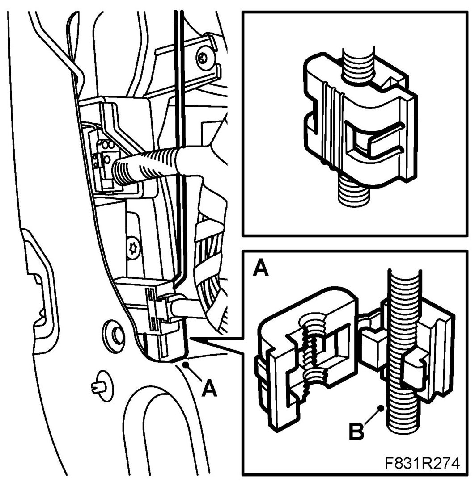
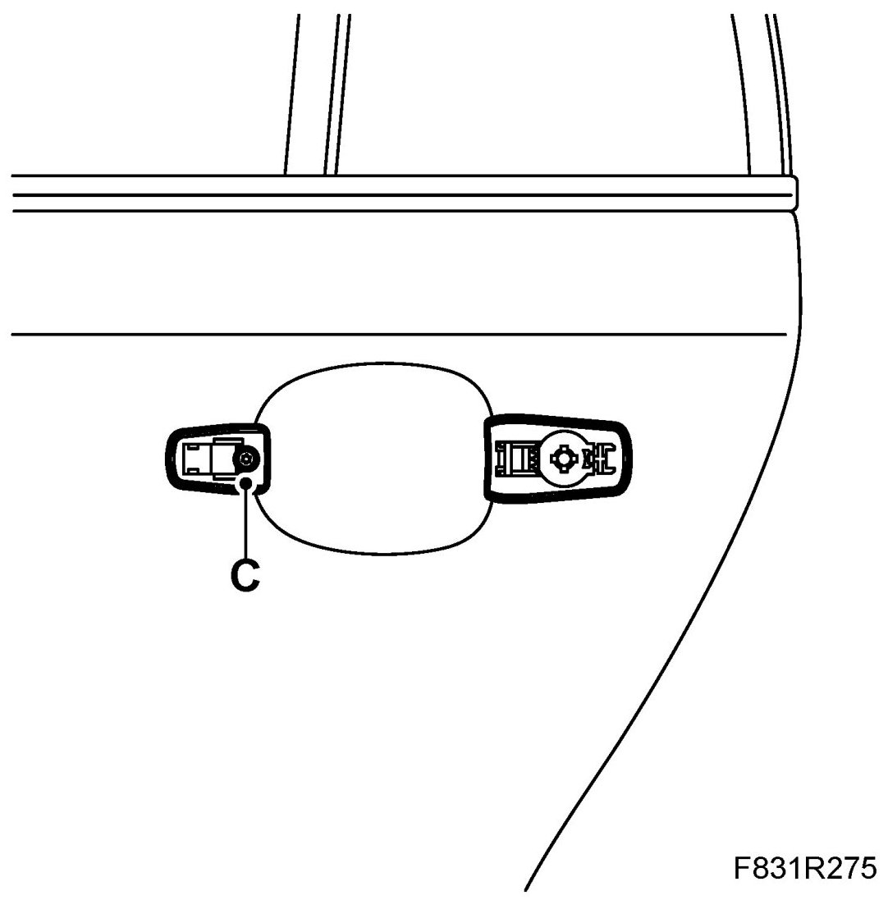
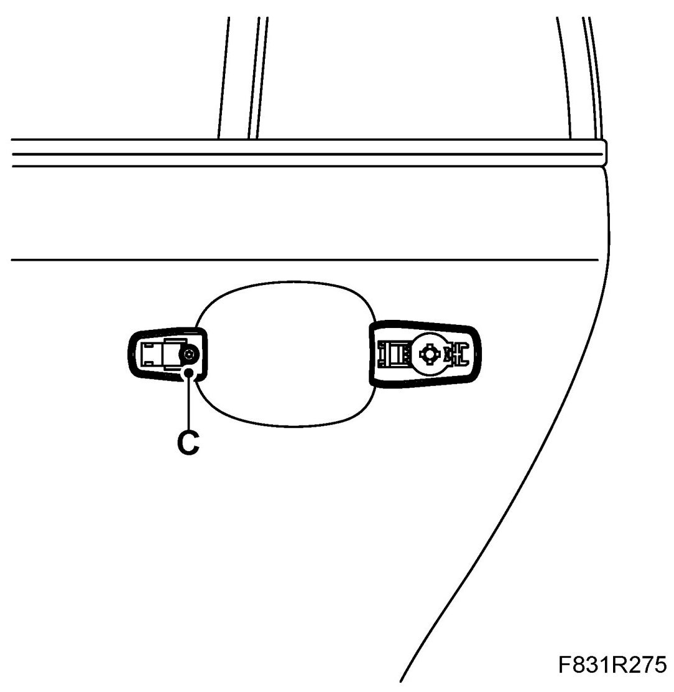
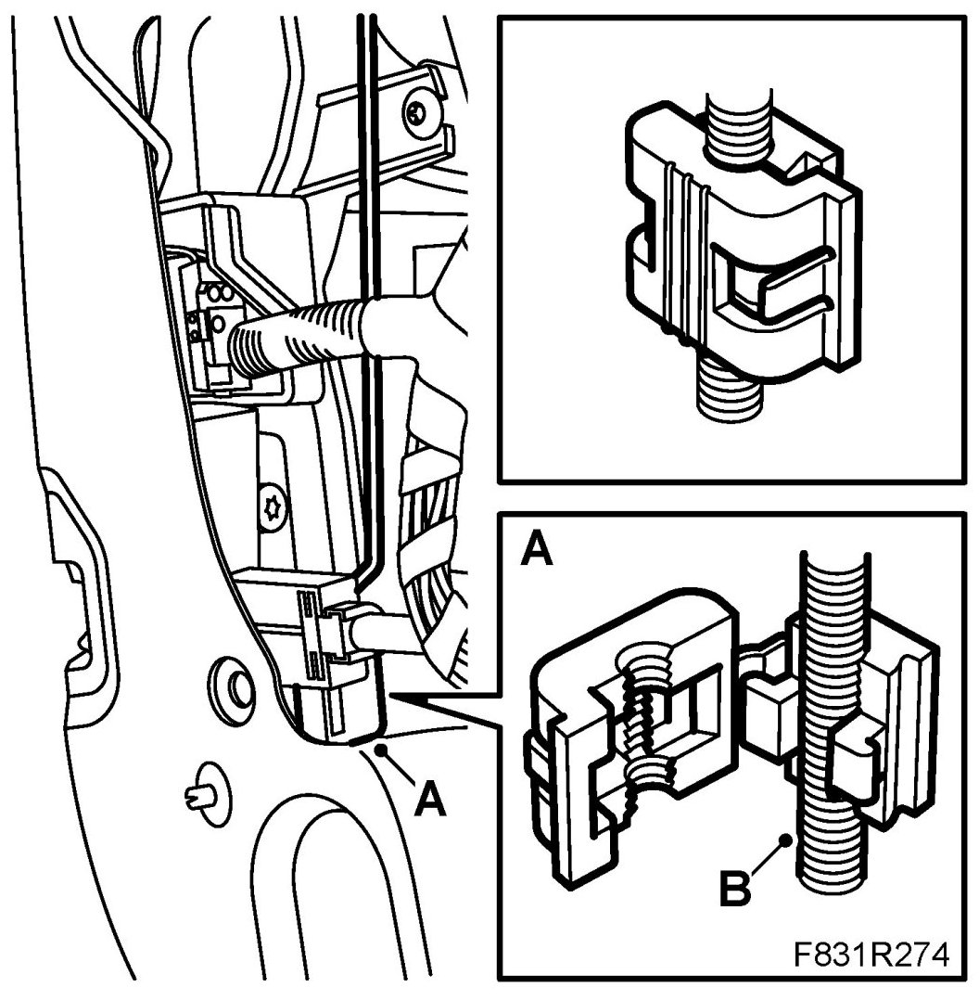

Rear Door Handle, Inner
Rear Door Handle, Inner
To remove
1. Remove Rear door trim.
2. Remove Rear door handle.
3. Detach the retaining clip (A) for the lock rod (B).

4. Remove the door handle's inner part.
- Slacken the bolt (C) and pull the inner part of the handle forward to remove it.

To fit
1. Fit the door handle's inner section.

- Fit the inner part of the handle to the door and tighten the bolt (C) to secure the handle.
2. Fit the lock rod (B) for the retaining clip (A).

3. Fit Rear door handle.
4. Fit Rear door trim.